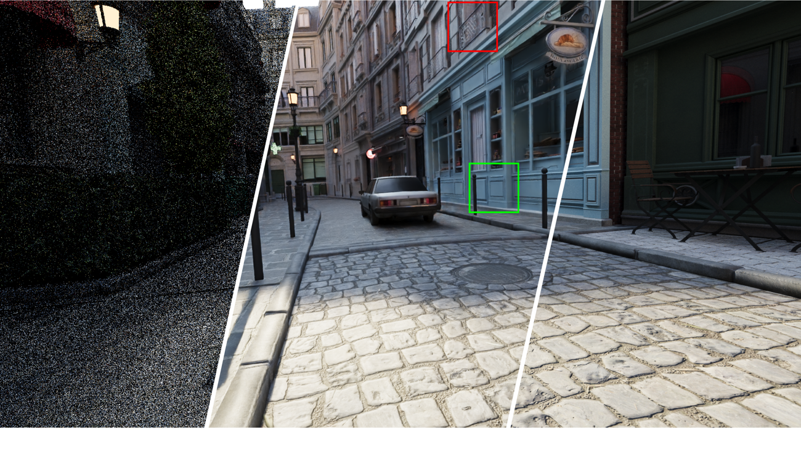
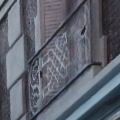
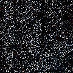

SIGGRAPH ASIA 2026 · Forthcoming
Log-linear Kernel Cluster Distillationfor Lightweight Neural Monte Carlo Denoising
State Key Lab for Novel Software Technology, Nanjing University
† Corresponding author
A lightweight Monte Carlo denoiser that predicts mixtures of kernel archetypes and residual offsets, retaining near-teacher image quality with 60.7% less inference time.
Interactive demo
Drag to compareNoisy input · 1 sppOursReference

Crop region


Noisy input
Ours
Drag to compare · enlarged paper cropsBistro / Detail A
16.3 ms at 1080p60.7% less time than NPPD Teacher8.8M parameters
RTX 4090 · FP16 / TensorRT 10.13 · fused CUDA filtering · I/O excluded.
Method overview
The student predicts compact mixtures of teacher-derived archetypes and residual offsets. A log-linear expansion reconstructs normalized kernels, while image- and kernel-space distillation preserve the teacher’s filtering behavior.
Citation
@inproceedings{yuan2026loglinear,
title = {Log-linear Kernel Cluster Distillation for
Lightweight Neural Monte Carlo Denoising},
author = {Yuan, Ye and Yuan, Zijuan and He, Junyuan and
Wang, Ziren and Zhi, Changyun and Zhou, Chenxi and
Liu, Boshan and Guo, Yanwen and Guo, Jie},
booktitle = {SIGGRAPH Asia 2026 Conference Papers},
year = {2026},
doi = {10.1145/3829340.3842233},
note = {Forthcoming}
}